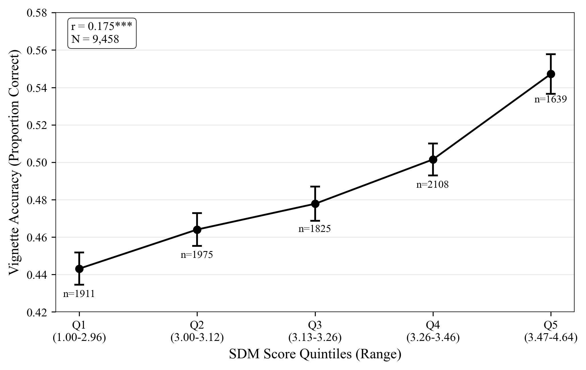

Development, validation, and field deployment of a survey instrument.
Helena Montoya
3rd year, PhD candidate · Management Department, Bocconi University
Arnaldo Camuffo & Thomaz Theodorovicz (CBS)
Motivation · Construct
Experiments prove SDM works, but no instrument exists to measure it at scale
SDM: structured causal reasoning, evidence evaluation, and belief updating to navigate uncertainty under real-world constraints.
Randomized trials across multiple industries and national contexts confirm that SDM training improves decision quality and organizational learning. Camuffo et al. (2020, 2024) · Zellweger & Zenger (2023)
×
But: this evidence comes entirely from controlled experiments.
No instrument exists to measure SDM in real organizations at scale, without experimental manipulation.
C1 · Instrument
24-item formative scale, three dimensions, Causal Reasoning · Evidence Evaluation · Adaptive Learning, validated across five complementary criteria
C2 · Field patterns
9,458 managers · 61 firms · 5 hierarchical levels. SDM predicts decision quality (r = .175***), and its organizational distribution is not what the org chart would suggest
SDM is a cyclical process: six steps cluster into three non-interchangeable dimensions
Problem diagnosis · causal theorizing · hypothesis formulation · evidence collection · evidence evaluation · belief adjustment — then back to diagnosis. Each dimension is necessary; none is substitutable.
Causal Reasoning (CR)
Steps 1–3 · 11 items
Diagnosing a problem, constructing causal models, and formulating testable hypotheses. Foundational: without structured theory, evidence gathering becomes ad hoc.
Evidence Evaluation (EE)
Steps 4–5 · 9 items
Design and conduct tests; appraise evidence against prior hypotheses; seek disconfirming signals. Quality of evidence collection determines feedback informativeness.
Adaptive Learning (AL)
Step 6 · 4 items
Update beliefs proportionally to evidence; revise or abandon theories when disconfirming evidence accumulates. Distinct from EE: rigor in testing does not ensure belief updating.
Why non-interchangeable matters
A manager who runs rigorous experiments but never revises their theory when results are surprising is not practicing SDM. Evidence Evaluation without Adaptive Learning is not scientific decision-making.
Four successive stages refined 40 candidate items to a validated 24
Initial pool grounded in a systematic literature review and semi-structured interviews with 12 senior managers · items mapped deductively to the 6-step framework.
40
initial pool
Bipolar Likert · both poles are plausible behaviors · reduces social desirability bias
→
S1 · Face
ChatGPT identifies scientific pole per item · wrong-pole items revised · no items cut
Yes, and your SDM score predicts decisions better than your title

Vignette accuracy by SDM quintile · N = 9,458 · error bars = 95% CI
54.7%
correct · top SDM quintile
44.3%
correct · bottom SDM quintile · 10 pp gap
54% vs 45%
junior managers, high SDM vs senior managers, low SDM; position alone does not predict decisions
AL, the linchpin: largest hierarchy differentiator (Δ = .19) and strongest predictor of decision quality (β = .12***). The same dimension connects both patterns.
Cross-sectional, we cannot establish whether SDM predicts outcomes over time or whether the hierarchy gradient reflects selection, socialization, or experience.
Criterion
Same-team design, SDM scale and vignettes built by the same team. Circularity mitigated but not eliminable. External criterion validation is the priority next step.
Convergent
AOT and NFC not administered, the two closest established constructs were not collected. Proxies are consistent with theory but do not substitute. → App I: proposed fix
Sample
Self-selected firms, organizations opted in; may compress the lower tail of the SDM distribution and attenuate between-firm variance.
Scientific reasoning is now observable and comparable across managers and firms
Validation template for process-based formative constructs
C2
What field deployment reveals
SDM varies almost entirely between people within firms, not between firms (ICC < 2%)
The hierarchy gradient is real but small, driven by Adaptive Learning, and not explained by selection
A frontline manager with high SDM outperforms a senior with low SDM on objective decision tasks
SDM is real. It predicts decisions. It follows the hierarchy without being caused by it. Experience doesn't build it. Promotion doesn't select for it. We don't know what does, but now we can ask.
Conducted April 2023. 18 SDM researchers invited; 16 responded (88%). Randomly assigned: 7 respond as "scientific manager," 9 as "opposite of a scientific manager." Item-by-item feedback elicited after survey completion.
Who are these 16 researchers? Active scholars in scientific decision-making, experimentation, and evidence-based strategy, affiliated with Bocconi, INSEAD, RSM (Erasmus), and Bayes Business School (City, London). Not colleagues asked a favour: these are people whose own research depends on understanding how managers reason under uncertainty. Most cited panelists: 3,100+ and 2,700+ Google Scholar citations; several serve on editorial boards of SMJ, OS, and JMS.
Elimination flag
Threshold
Rationale
Non-response
> 20% missing
Item clarity concern
Pole identification
< 75% correct pole
Ambiguous behavioral anchor
Scientific-group mean
< 4.0 (7-pt scale)
Item fails to elicit scientific response
Opposite-group mean
> 4.0 (7-pt scale)
Scientific framing bleeds into opposite condition
Between-group difference
< 2.0 scale points
Poor discriminant sensitivity
Reversed direction
Any reversal
Fundamental construct validity failure
8
items eliminated (redundancy, poor differentiation, or persistent confusion)
7-pt → 5-pt
scale reduced on expert recommendation to reduce cognitive burden
CFA specification tests: structural distinguishability
Poor CFA fit is diagnostic for formative constructs (indicators cause the construct; they are not expected to covary). The purpose of CFA here is not model fit but to test whether three factors are statistically distinct from two.
Specification
CFI
RMSEA
Interpretation
1-factor (all items)
< .50
high
Confirms indicators are not interchangeable reflections of one latent trait
3-factor, reflective
< .50
high
Expected, formative specification misfit under reflective CFA
3-factor correlated (main)
< .50
high
Note: CR × EE interfactor = −.88 (Heywood artifact); composite correlations all positive (Table B5)
2-factor (EE + AL merged)
< .50
high
Δχ² vs. 3-factor = 131.86, Δdf = 1, p < .001, EE and AL are statistically distinct
Key result
Despite high composite-score correlation between EE and AL (r = .95), the 3-factor model fits significantly better than the 2-factor model (Δχ² = 131.86, p < .001). The three dimensions are statistically distinguishable. Poor CFI does not undermine this conclusion, it confirms the formative specification.
Each item regressed on the remaining 23. Redundant indicators inflate the weight of an arbitrarily sampled facet of the construct (Coltman et al., 2008). Conventional threshold: VIF < 3; conservative: VIF < 5.
Dimension
Items
VIF range
Tolerance range
Causal Reasoning
11
1.03–1.17
0.86–0.97
Evidence Evaluation
9
1.04–1.19
0.84–0.96
Adaptive Learning
4
1.04–1.14
0.88–0.96
All 24 items
24
1.03–1.19
0.84–0.97
1.03–1.19
VIF range across all 24 items · well below threshold of 3
.84–.97
Tolerance values · minimum acceptable threshold is .20
Low inter-item correlations reflect good domain coverage, each item contributes distinct information. Expected and appropriate for a formative instrument.
OLS with HC3 robust SE. Reference condition is Placebo. *** p < .001, * p < .05. Italian intuitive contrast borderline (p = .064, n.s.). MBA alumni had no treatment variation; means reported for completeness.
Conventional threshold: 5%. All ICCs well below threshold across four estimation methods. LOFO = Leave-One-Firm-Out (61 iterations): removing any single firm changes ICC by at most .003. Bootstrap CIs (1,000 iterations) confirm.
Implication
SDM scores vary primarily between managers, not between firms. The within-firm variance that does exist follows the organizational hierarchy (Pattern 2).
SDM by organizational tier: full OLS with firm fixed effects
Variable
SDM Overall
Causal Reasoning
Evidence Eval.
Adaptive Learning
Organizational tier (ref: T5 Frontline)
T1 (Top Leadership)
0.070*** (.019)
0.071** (.023)
0.022 (.022)
0.190*** (.031)
T2 (Senior Executives)
0.047** (.017)
0.076*** (.021)
−0.010 (.026)
0.071* (.030)
T3 (Middle Management)
0.039*** (.009)
0.054*** (.007)
0.005 (.016)
0.085*** (.022)
T4 (Junior Management)
0.022** (.008)
0.024* (.011)
0.006 (.012)
0.069*** (.015)
Individual controls
STEM Education
0.009 (.008)
0.013 (.010)
0.000 (.009)
0.040† (.021)
Graduate Degree
0.041*** (.007)
0.034*** (.007)
0.032** (.011)
0.074*** (.017)
Tenure (years)
−0.001** (.001)
−0.001* (.001)
−0.001† (.001)
−0.000 (.001)
Model
N
9,458
9,452
9,456
9,449
Firm FE
Yes (61)
Yes (61)
Yes (61)
Yes (61)
R²
0.025
0.020
0.023
0.023
OLS with firm-clustered SE. Reference tier: T5 (Frontline). Decision area controls included (not shown). † p < .10, * p < .05, ** p < .01, *** p < .001.
Main paper · §4–5, SDM Correlates (Partial Convergent)
SDM correlates with likely predictors (partial convergent validity)
Pearson / point-biserial correlations, SDM overall score, N = 9,238–9,467. Variable coding: hierarchical level 1 = senior → 5 = frontline; negative r = higher SDM at senior levels.
Variable
r with SDM
Theoretically predicted direction
Interpretation
Vignette accuracy
.175***
+ (criterion)
Primary behavioral validity evidence, not a proxy
Graduate degree
.075***
+
Post-graduate training reduces myside bias; linked to higher NFC
Education level
.074***
+
Consistent with graduate degree finding
Seniority (hierarchical level)
−.042***
− (negative coding)
Senior managers score higher, consistent with hierarchy gradient
Tenure (years)
−.044***
−
Experience ≠ scientific reasoning method
STEM background
.009 n.s.
≈ 0 (predicted)
Technical knowledge ≠ reasoning orientation
All six correlations fall in theoretically predicted directions. These are partial proxies; full convergent validity against AOT and NFC is the priority next validation step.
Firm-level OLS: mean SDM and collective decision accuracy
OLS at the firm level. Outcome: firm mean vignette accuracy. N = 57 firms (≥ 5 respondents). Standard errors in parentheses. * p < .05.
Predictor
M1
M2
M3
Firm mean SDM
0.277* (0.107)
0.280* (0.107)
0.281* (0.109)
Firm SD of SDM
,
0.120 (0.127)
0.119 (0.128)
Firm N (managers)
,
,
0.000 (0.001)
R²
0.107
0.121
0.122
Firms
57
Firm mean SDM is significant across all three specifications (p = .013). SDM dispersion adds no predictive power. N = 57 is underpowered; result is exploratory.
Actively Open-minded Thinking (Baron, 1991). Willingness to seek information that could contradict current beliefs and to revise conclusions when evidence warrants. Directly maps to SDM's Adaptive Learning dimension.
NFC
Need for Cognition (Cacioppo & Petty, 1982). Intrinsic motivation to engage in effortful analytical thinking. Maps to SDM's Causal Reasoning dimension.
Why we expect moderate, not high, correlations
SDM measures the structured practice of scientific reasoning. AOT and NFC measure dispositions. A high-NFC manager may think hard but not scientifically. SDM requires the specific methodology, not just the motivation.
r ≈ .20–.40
Expected range · convergent without collapsing construct distinctiveness
r > .60
Would indicate SDM is redundant with AOT/NFC · not expected